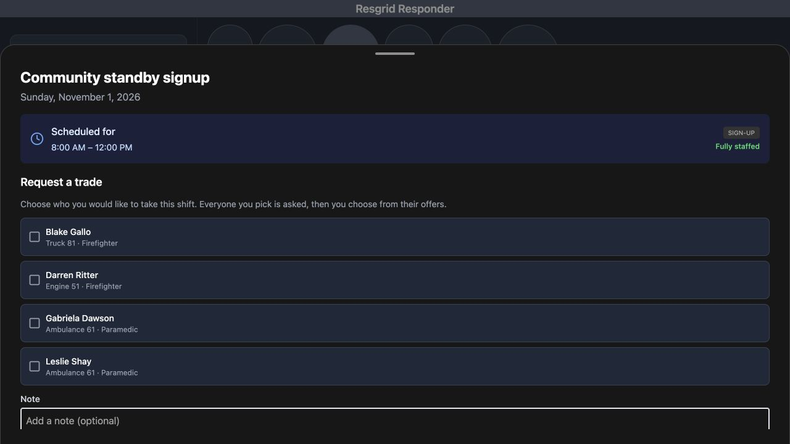
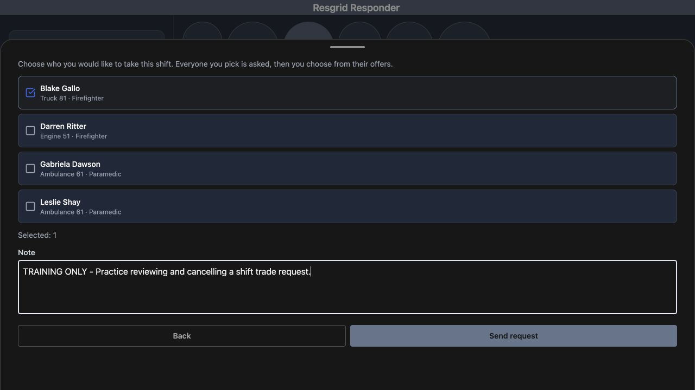
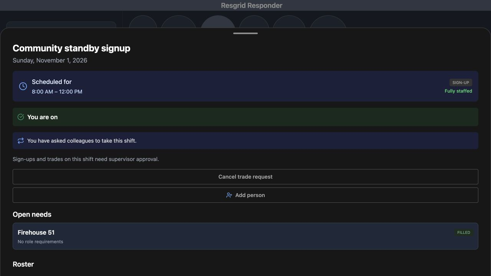
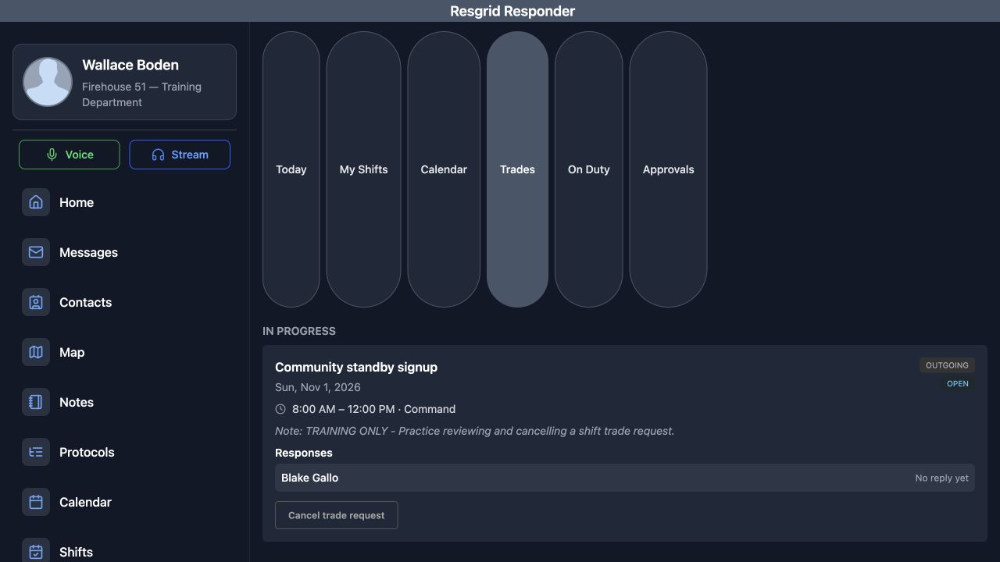
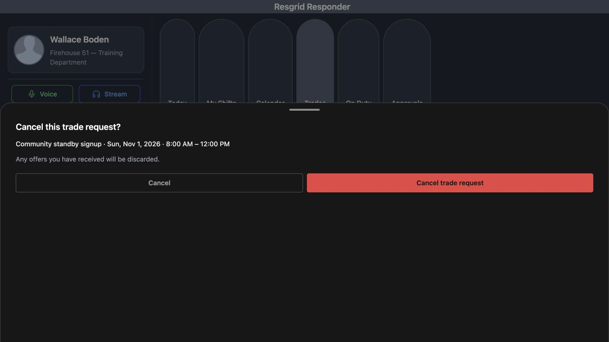
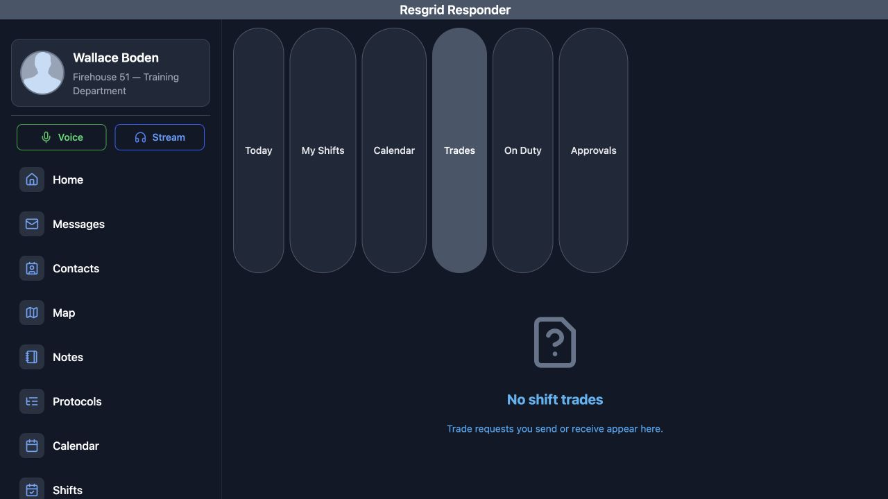
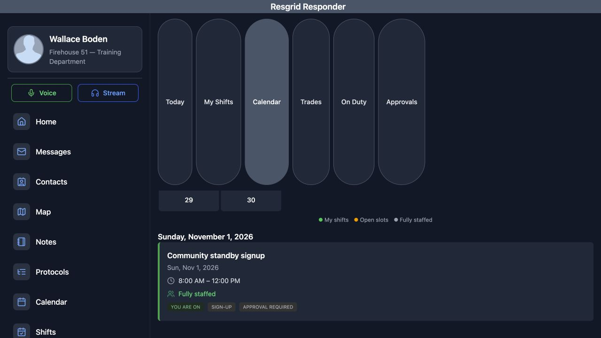
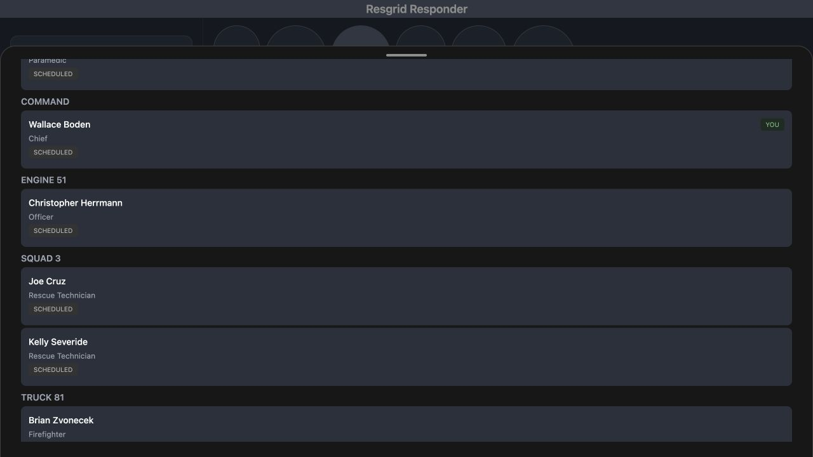

Responder · Video walkthrough
Responder: send and cancel a shift-trade request
Ask a selected colleague to take an eligible shift, inspect the saved outgoing request and response state, then cancel it and verify the retained roster.
Before you begin
- A normal authorized Responder session in the intended department.
- An eligible future shift day on which the signed-in person is already rostered and Request trade is available.
- An approved fictional training exercise and an appropriate colleague to receive the request.
Chapters
- Verify the shift occurrence and approval rule
- Read the request form and candidate identities
- Select one person and review the note
- Check the saved request notice
- Read the outgoing entry and response state
- Review and confirm cancellation
- Verify the queue after a fresh load
- Return to the matching Calendar card
- Reopen the same day and check membership
- Check the retained named roster entry
- Use clear request states in any department
Watch the walkthrough
Step 1
Verify the shift occurrence and approval rule
Open the intended day in Responder's Shifts workspace. Here, Community standby signup is scheduled for Sunday, November first, from eight until noon. You are on confirms this account's current roster membership. Read the notice that sign-ups and trades need supervisor approval before changing coverage. Request trade is available for this occurrence. Verify the day and time first, especially when the same shift name appears on several dates.

Practice
Open an eligible training occurrence and verify its date, time, personal roster state and approval requirement.
Step 2
Read the request form and candidate identities
Choose Request trade to open Request a trade. The explanation says that everyone you pick is asked, and then you choose from their offers. Read the candidate names with their groups and roles. Blake Gallo is shown with Truck eighty-one and Firefighter. The other displayed candidates remain separate choices. This is where you decide whom you intend to ask; a displayed name is not an accepted offer or an approved replacement.

Practice
Read the form's explanation and identify the intended candidate by name, group and role.
Step 3
Select one person and review the note
Select the checkbox for the intended person. This exercise selects only Blake Gallo, and Selected, one confirms the count. Enter a clear Note explaining the request. Here, the note explicitly identifies a training exercise for reviewing and cancelling a trade. Review that note and the selected person before choosing Send request. Confirm the colleague's suitability for your department's coverage needs as part of the actual staffing decision.

Practice
Select only the intended fictional candidate, verify Selected: 1, and review the note before submitting once.
Step 4
Check the saved request notice
Choose Send request once. The returned day detail says, You have asked colleagues to take this shift, and offers Cancel trade request. You are on remains visible, along with the supervisor-approval rule. These details establish the saved request state shown here. They do not show an accepted offer, supervisor approval or a completed handover. Keep your department's actual coverage arrangements clear while the request is outstanding.

Practice
Read the actual returned notice and distinguish a saved request from a completed staffing change.
Step 5
Read the outgoing entry and response state
Close the day sheet and choose Trades. Under In progress, find the standby entry with the intended date and time. It is marked Outgoing and Open, and includes the saved training Note. Responses lists Blake Gallo with No reply yet. Read the actual response label before planning a replacement. In this recorded exercise, the colleague has not replied, and the request has not produced an accepted coverage agreement.

Practice
Find the saved outgoing entry, compare its identity and note, and read the selected colleague's actual response state.
Step 6
Review and confirm cancellation
Choose Cancel trade request on that outgoing entry. The confirmation asks, Cancel this trade request, and repeats the shift name, date and time. Read the warning that any offers you have received will be discarded. This example's preceding response state was No reply yet. Verify the identity in the confirmation, then choose the red Cancel trade request button to carry out the intended cancellation.

Practice
Verify the confirmation's shift identity and warning before deliberately confirming the training request's cancellation.
Step 7
Verify the queue after a fresh load
After confirmation, Trades shows No shift trades. The earlier Open entry is no longer displayed in this queue. A full page reload and a fresh visit to Trades return the same empty state. This checks that the recorded result persists beyond the confirmation screen. Read the application's actual returned state when doing this in your department; this view does not present a separate cancellation-history record.

Practice
Reload normally, return to Trades and verify the actual returned queue state.
Step 8
Return to the matching Calendar card
Choose Calendar to return to the day cards. Find Sunday, November first, and compare the Community standby signup card with the cancelled request. Its eight-to-noon time range, You are on label and Approval required label remain visible. Open this matching card to recheck the saved day detail. Using the full date and hours keeps a familiar shift name from being confused with a different occurrence.

Practice
Choose Calendar and compare the intended dated card and hours before reopening it.
Step 9
Reopen the same day and check membership
The reopened day detail identifies the same standby occurrence. Request trade is available again, the outstanding-request notice is absent, and You are on is retained. Compare the date and time with the original request so you know this is the same occurrence. Cancelling the request has not demonstrated a replacement assignment. This is still the signed-in person's recorded day membership.
Practice
Reopen the same day and compare its restored request action and retained membership with the earlier request state.
Step 10
Check the retained named roster entry
Scroll through the same day's Roster. Wallace Boden remains under Command with Chief and the Scheduled source label. The Engine and Squad entries remain visible with their own people and roles. This named readback helps you distinguish a cancelled request from a transfer of responsibility. Verify actual availability through your department's procedures before relying on the roster for a real handover.

Practice
Find the original person's retained group, role and Scheduled roster entry after cancellation.
Step 11
Use clear request states in any department
Use the same identity and result checks when community paramedicine or mental health teams request outreach coverage, search-and-rescue teams arrange support, security companies cover a post, wildland contractors coordinate a crew, or industrial response teams plan standby staffing. Fire and EMS departments can apply them to station coverage. Keep a request, a colleague's response, required approval and the final roster assignment distinct, and verify the actual result of each operation your department performs.
Practice
Apply the request, response and roster checks to a suitable fictional coverage scenario for your own department.
Examples for your department
- Fire / EMS
- Ask an appropriate colleague about station coverage and verify the actual request and roster result.
- Community response
- Review outreach or mental health response coverage using clear request, response and approval states.
- Search and rescue
- Coordinate mission-support coverage while confirming the intended date and actual staffing agreement.
- Security
- Read the correct post-coverage request and response before treating a colleague as the replacement.
- Wildland
- Keep crew coverage requests and actual roster assignments distinct when arranging standby support.
- Industrial
- Check the intended emergency-team standby day and the saved result of a request or cancellation.
Transcript
Download transcriptRead the complete transcript
Responder: send and cancel a shift-trade request Audience: Rostered personnel, Shift supervisors, Department trainers Verify the shift occurrence and approval rule Open the intended day in Responder's Shifts workspace. Here, Community standby signup is scheduled for Sunday, November first, from eight until noon. You are on confirms this account's current roster membership. Read the notice that sign-ups and trades need supervisor approval before changing coverage. Request trade is available for this occurrence. Verify the day and time first, especially when the same shift name appears on several dates. Practice: Open an eligible training occurrence and verify its date, time, personal roster state and approval requirement. Read the request form and candidate identities Choose Request trade to open Request a trade. The explanation says that everyone you pick is asked, and then you choose from their offers. Read the candidate names with their groups and roles. Blake Gallo is shown with Truck eighty-one and Firefighter. The other displayed candidates remain separate choices. This is where you decide whom you intend to ask; a displayed name is not an accepted offer or an approved replacement. Practice: Read the form's explanation and identify the intended candidate by name, group and role. Select one person and review the note Select the checkbox for the intended person. This exercise selects only Blake Gallo, and Selected, one confirms the count. Enter a clear Note explaining the request. Here, the note explicitly identifies a training exercise for reviewing and cancelling a trade. Review that note and the selected person before choosing Send request. Confirm the colleague's suitability for your department's coverage needs as part of the actual staffing decision. Practice: Select only the intended fictional candidate, verify Selected: 1, and review the note before submitting once. Check the saved request notice Choose Send request once. The returned day detail says, You have asked colleagues to take this shift, and offers Cancel trade request. You are on remains visible, along with the supervisor-approval rule. These details establish the saved request state shown here. They do not show an accepted offer, supervisor approval or a completed handover. Keep your department's actual coverage arrangements clear while the request is outstanding. Practice: Read the actual returned notice and distinguish a saved request from a completed staffing change. Read the outgoing entry and response state Close the day sheet and choose Trades. Under In progress, find the standby entry with the intended date and time. It is marked Outgoing and Open, and includes the saved training Note. Responses lists Blake Gallo with No reply yet. Read the actual response label before planning a replacement. In this recorded exercise, the colleague has not replied, and the request has not produced an accepted coverage agreement. Practice: Find the saved outgoing entry, compare its identity and note, and read the selected colleague's actual response state. Review and confirm cancellation Choose Cancel trade request on that outgoing entry. The confirmation asks, Cancel this trade request, and repeats the shift name, date and time. Read the warning that any offers you have received will be discarded. This example's preceding response state was No reply yet. Verify the identity in the confirmation, then choose the red Cancel trade request button to carry out the intended cancellation. Practice: Verify the confirmation's shift identity and warning before deliberately confirming the training request's cancellation. Verify the queue after a fresh load After confirmation, Trades shows No shift trades. The earlier Open entry is no longer displayed in this queue. A full page reload and a fresh visit to Trades return the same empty state. This checks that the recorded result persists beyond the confirmation screen. Read the application's actual returned state when doing this in your department; this view does not present a separate cancellation-history record. Practice: Reload normally, return to Trades and verify the actual returned queue state. Return to the matching Calendar card Choose Calendar to return to the day cards. Find Sunday, November first, and compare the Community standby signup card with the cancelled request. Its eight-to-noon time range, You are on label and Approval required label remain visible. Open this matching card to recheck the saved day detail. Using the full date and hours keeps a familiar shift name from being confused with a different occurrence. Practice: Choose Calendar and compare the intended dated card and hours before reopening it. Reopen the same day and check membership The reopened day detail identifies the same standby occurrence. Request trade is available again, the outstanding-request notice is absent, and You are on is retained. Compare the date and time with the original request so you know this is the same occurrence. Cancelling the request has not demonstrated a replacement assignment. This is still the signed-in person's recorded day membership. Practice: Reopen the same day and compare its restored request action and retained membership with the earlier request state. Check the retained named roster entry Scroll through the same day's Roster. Wallace Boden remains under Command with Chief and the Scheduled source label. The Engine and Squad entries remain visible with their own people and roles. This named readback helps you distinguish a cancelled request from a transfer of responsibility. Verify actual availability through your department's procedures before relying on the roster for a real handover. Practice: Find the original person's retained group, role and Scheduled roster entry after cancellation. Use clear request states in any department Use the same identity and result checks when community paramedicine or mental health teams request outreach coverage, search-and-rescue teams arrange support, security companies cover a post, wildland contractors coordinate a crew, or industrial response teams plan standby staffing. Fire and EMS departments can apply them to station coverage. Keep a request, a colleague's response, required approval and the final roster assignment distinct, and verify the actual result of each operation your department performs. Practice: Apply the request, response and roster checks to a suitable fictional coverage scenario for your own department. Examples for your department Fire / EMS: Ask an appropriate colleague about station coverage and verify the actual request and roster result. Community response: Review outreach or mental health response coverage using clear request, response and approval states. Search and rescue: Coordinate mission-support coverage while confirming the intended date and actual staffing agreement. Security: Read the correct post-coverage request and response before treating a colleague as the replacement. Wildland: Keep crew coverage requests and actual roster assignments distinct when arranging standby support. Industrial: Check the intended emergency-team standby day and the saved result of a request or cancellation.